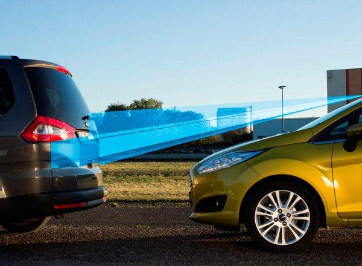

Pandora DeLux 1500
Система с двухсторонней связью и дистанционным запуском двигателя.
Автосигнализации марки Pandora разрабатываются и производятся российской компанией AlarmTrade. В этой сигнализации использована качественная элементная база, например, применен встроенный интегральный акселерометр для распознавания движения и ударов с адаптивными алгоритмами обработки и регулировкой чувствительности с брелока. Два датчика температуры (один в блоке сигнализации, другой выносной для установки на двигатель) выполнены на цифровом датчике DS18B20 с погрешностью 0,5?С. Как утверждает производитель, система обладает устойчивым к городским помехам радиоканалом, который позволяет получать извещения на брелок о происходящих с автомобилем событиях на расстоянии до 1 км в условиях индустриальных помех современного города. Дальность оповещения в открытой местности может достигать нескольких километров. Управление с брелока может осуществляться при расстоянии до автомобиля до 500 м. (в городских условиях дальность командного радиоканала может быть ниже в зависимости от помех). Команды передаются в режиме диалога, при неустойчивой связи автоматически многократно повторяются, и только в случае непреодолимого уровня радиопомех или слишком большого расстояния брелок системы извещает владельца звуковым и визуальным извещением о проблеме в установлении радиосвязи.
Реализован режим оповещения о выходе из зоны уверенного приема канала извещения, который автоматически известит о невозможности доставить тревожное извещение владельцу.
В радиоканале системы используется диалоговый код с индивидуальными ключами шифрования для каждого изделия, что исключает его сканирование и подбор. Для дополнительного брелока без ЖКИ используется отдельный односторонний алгоритм. Для усиления мер защиты в меню программирования предусмотрено отключение дополнительного одностороннего брелока, при этом подбор кода через этот канал также становится невозможным. В этом случае, при утере двустороннего брелока, дополнительный брелок можно активировать с помощью ПИН-кода (ПИН-код системы имеет 6561 комбинацию) или ключом TM (iButton). В инструкции написано: «Увеличенная секретность ПИН-кода системы (четыре цифры)». Обычно в сигнализациях ПИН-код состоит из 3-х цифр. 4 цифры – 6561 комбинация, 3 цифры – 729 комбинаций. Конечно же, не один угонщик не станет перебирать 729 комбинаций, так что увеличение комбинаций бессмысленно, но и плохого в этом ни чего нет.
В системе возможно использование ключа Touch Memory для управления некоторыми функциями. Например, функция иммобилайзера может дезактивироваться с помощью этого ключа.
Разные кнопки для постановки и снятия с охраны.
Звуковой и вибро режимы работы брелка с обратной связью.
Возможность подключения дополнительного двухуровневого датчика.
Возможность просмотра статистики, т.е. времени и причин сработок сигнализации с помощью брелока с обратной связью.
Использование энергосберегающих режимов микроконтроллеров AtMega, примененных в этих сигнализациях, по словам производителей, позволило добиться длительного времени пользования брелоком без замены элемента питания, при минимальной задержке между тревожным событием и извещением о нем на брелоке.
Хотя в микроконтроллерах семейства PIC, используемых в большинстве сигнализаций, подобные режимы тоже есть.
StarLine Twage B9
Система с двухсторонней связью и дистанционным запуском двигателя.
По словам производителя, Оригинальный динамический код управления, защищенный от подбора и перехвата диалоговым алгоритмом кодирования «свой-чужой»
Максимальный радиус действия брелка в режиме передатчика ………. 600 м*
Максимальный радиус действия брелка в режиме пейджера …………. 1200 м*
Максимальный радиус действия брелка без обратной связи …………….. 15 м*
* Дальность действия брелка и пейджера может уменьшаться в зависимости от места установки приемопередатчика, месторасположения автомобиля и пользователя, радиочастотных помех, погодных условий, напряжения автомобильного аккумулятора и напряжения элемента питания брелка.
Система имеет два терморезистивных датчика: один внутри салона, второй – выносной для крепления на двигатель (отображение на брелке показаний обоих датчиков).
Разные кнопки для постановки и снятия с охраны.
Возможность работы с охранно-поисковым GSM/GPS модулем StarLine Space.
Индикация текущего времени, будильник, таймер.
Звуковой и вибро режимы работы брелка с обратной связью.
Дистанционное программирование новых и стирание утерянных брелков.
4 дополнительных канала управления.
Возможность подключения дополнительного двухуровневого датчика.
Возможность подключения цифровых радиореле блокировки двигателя StarLine DRR (до двух штук).
Возможность использования активных блокировок, т.е. при демонтаже блока сигнализации блокировка останется.
Tomahawk TW-9030 (TW-9020)
Сигнализация с обратной связью, функцией дистанционного запуска.
TW-9030 имеет терморезистивный датчик температуры, находящийся в радиомодуле.
TW-9020 не имеет такого датчика.
Автозапуск позволяет заводить двигатель каждые 1, 2, 4 и 24 часа.
Увеличенная дальность действия брелка с LSD до 1200 м. (зависит от внешних условий).
Встроенное реле блокировки стартера.
Звуковой и вибро режимы работы брелка с обратной связью.
Два дополнительных канала.
Недорогая и функциональная сигнализация, по соотношению цена/качество вполне приемлемая.
Феникс
Это наиболее похожий аналог на блок сигнализации «Цербер» интегральной системы безопасности автомобиля.
Сравнительные характеристики:
Феникс имеет один плохо защищенный канал для считывания ключа ТМ (у Цербера два независимых хорошо защищенных канала)
Феникс не поддерживает функцию автозапуска (Цербер – поддерживает)
У феникса нет возможности совместной постановки на охрану с другими автосигнализациями (у Цербера такая возможность есть)
Так же были устранены некоторые недоработки Феникса при проектировании Цербера
Другие функции у систем идентичны
Москит. Антиразбойный иммобилайзер
Это наиболее похожий аналог иммобилайзера «Micro Lock» интегральной системы безопасности автомобиля.
Сравнительные характеристики:
Москит может работать с разными полярностями сигнала «парковка» и активным «минусом» водительской двери (Micro Lock может работать с любыми сигналами парковки и двери).
На некоторых автомобилях сигнал «парковка» не дотягивает до минуса, и из-за неудачного схемного решения Москита, распознается им неверно, в Micro Lock этого недостатка нет.
В Моските индикация состояния осуществляется светодиодом (СИД), а в Micro Lock – зуммером, можно использовать и СИД через резистор. Зуммер более удобен, так как моргание светодиода в ясный солнечный день можно и не увидеть, и в установке зуммер проще, не надо сверлить обшивку автомобиля для его установки.
За 7 секунд до блокировки у иммобилайзера Micro Lock начинает сигналить зуммер, что предупреждает водителя о том, что он не снял иммобилайзер с охраны, за это время он может принять меры к безопасной остановке автомобиля или приложить ключ. В Моските блокировка происходит внезапно через запрограммированное время (32, 16 или 2 секунды), что может привести к ДТП.
Оба иммобилайзера могут работать с сигналами селектора передач (датчиком нейтрали у РКПП) и ручником, а Micro Lock еще и с педалью ножного тормоза.
Блокиратор капота SENTRY Navigator Electro
Производитель: SENTRY
Модель: Navigator Electro
Блокирующий элемент осуществляет фиксацию капота в закрытом положении и вынуждает угонщика либо резать капот, либо приложить усилие в несколько тонн(!) (такую нагрузку выдерживает штатный замок, заблокированный HL Navigator Electro), чтобы добраться до электрических блокировок, расположенных в подкапотном пространстве. Управление блокиратором осуществляется электронным путем. Это может быть дополнительный канал сигнализации, либо схема “открыт-закрыт” замок производится параллельно снятию-постановке на охрану автомобиля. Более того, это изделие имеет дополнительную блокировку зажигания и, естественно, страховку на случай полностью севшего аккумулятора. Все тросы и механизмы устройства защищены от попадания воды и уж тем более грязи. HL Navigator electro является универсальным блокиратором, т.е. может быть установлен на любой автомобиль.
Технические характеристики:
Катушка управления:
- ток 4 А,
- напряжение 12 В,
- длительность импульса 1 сек.
Переключение положений осуществляется сменой
полярности сигнала.
Переключатель конечных положений управляющего вала:
- ток 1 А,
- напряжение 12 В.
Используется только для управления катушкой реле
блокировки двигателя и индикатором состояния.
Комплектация:
- блокирующий механизм в сборе,
- блокирующий трос,
- аварийный трос, рубашка троса в сборе,
- усиленная рубашка блокирующего троса,
- кроншейн крепления рубашки блокирующего троса,
- рубашка блокирующего троса,
- метизы,
- шестигранный ключ.
Электромеханический блокиратор капота Defen Time
Универсальный электромеханический блокиратор капота Defen Time предназначен для блокировки доступа в подкапотное пространство. Привод замка – электрический, управление осуществляется с пульта сигнализации.
Замок универсален и может быть установлен на любой автомобиль.
В конструкции замка предусмотрена электрическая часть, выполняющая функцию блокировки цепи зажигания. Но при использовании этой функции нельзя будет использовать автозапуск.
Меритек компонент является практически полным аналогом БКС-1, представляет из себя блок управления электрическими активаторами с помощью ключа Dallas и устанавливается совместно, например, с Defen Time.
Еще немного о системах безопасности автомобиля ...